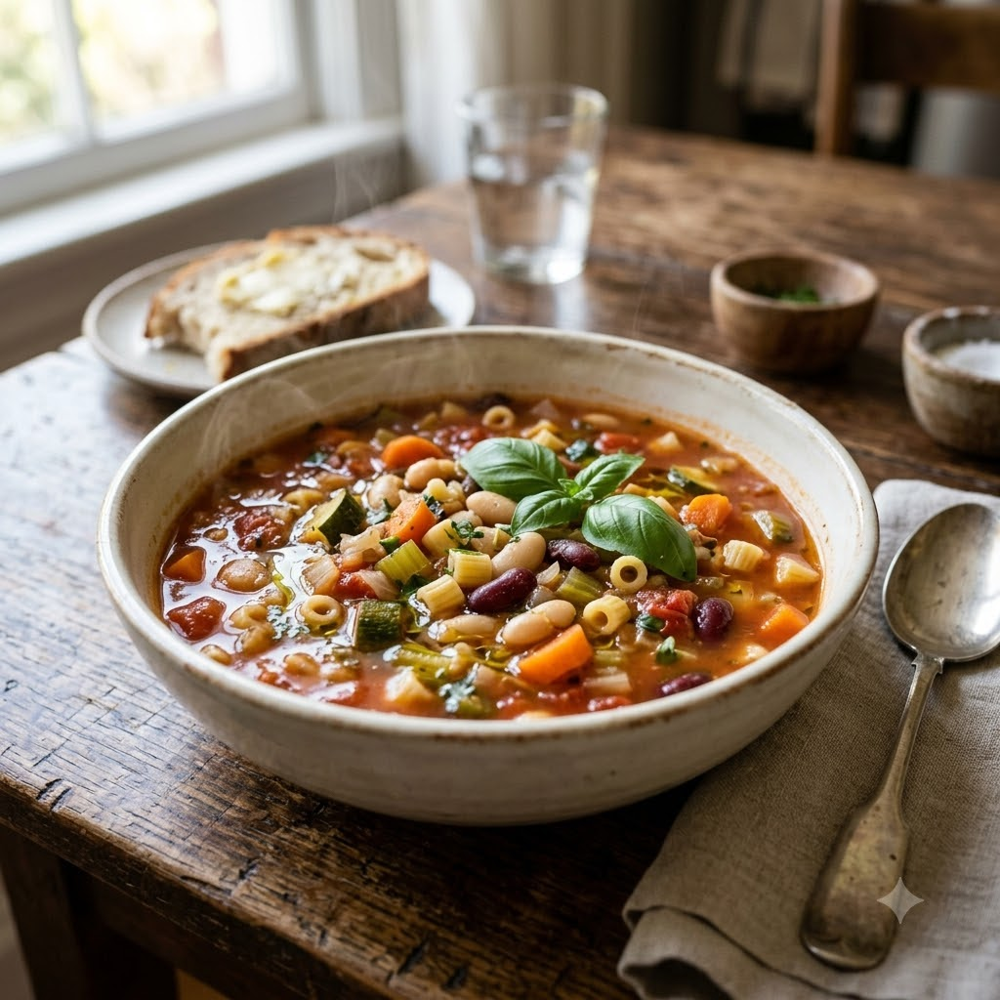

Minestrone Soup

Minestrone Soup
Chef Magic – Sauté + Boil Auto 28 min — Serves 4
Vegan • High-Fibre • Italian • Healthy
Ingredients
- 1 onion, chopped
- 2 carrots, diced
- 2 celery stalks, chopped
- 2 cloves garlic, minced
- 1 can (400g) chopped tomatoes
- 1 cup cooked kidney or cannellini beans
- 1/2 cup small pasta
- 4 cups vegetable stock
- 2 tbsp olive oil
- 1 tsp dried Italian herbs
- Salt & pepper to taste
Method
1Add olive oil to the jar; select Sauté (Speed 2–4, ~130–160°C) and cook onion, carrots and celery for 7 minutes until softened.
2Add garlic and Italian herbs; cook 1 minute, then add chopped tomatoes and stock.
3Select Boil (Speed 1–2, 100°C) and cook for 12 minutes, then add beans and pasta.
4Continue on Boil (Speed 1–2, 100°C) for 8 minutes until pasta is tender; season with salt and pepper before serving.